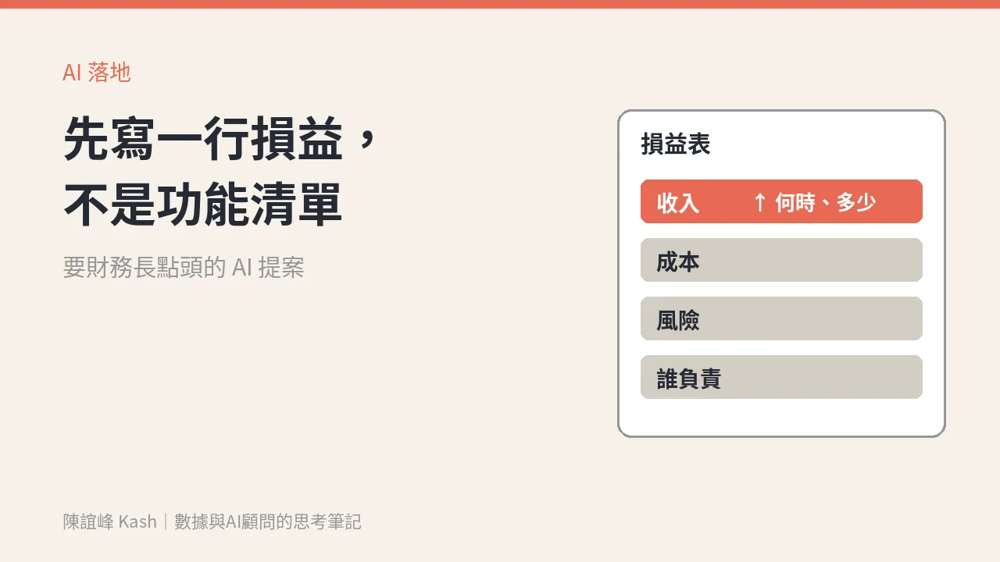

要財務長點頭的 AI 專案：先寫一行損益，不是一份功能清單
AI 提案過不了財務那關，多半不是預算不夠，而是提案只講 AI 能做什麼，沒講哪一行數字會變、什麼時候看得到、誰為它負責。

你有沒有遇過這種場面：
業務或行銷主管準備了一份 AI 提案，裡面有十幾個功能、三個廠商比較、一張漂亮的架構圖。財務長翻了兩頁，問了一句：「所以這個會讓哪個數字變好？」
會議室安靜了。
麥肯錫 11 月 9 日發表的〈How CFOs can make AI pay off〉，剛好把這個問題講得很清楚。
先看一組數字：用得很多，回本的很少
文章引用麥肯錫的調查：近九成受訪者說，公司至少在一個業務功能裡固定使用 AI。但只有 37% 的受訪者說，AI 的使用對 EBIT（息稅前利潤）有正面貢獻。
更早一點，麥肯錫 2024 年夏天的調查裡，超過八成受訪者說，生成式 AI 還沒有對企業層級的 EBIT 帶來實質影響。
大家都在用，但多數公司說不出它讓哪一行數字變好。
問題不在 AI，在問題問錯了順序
文章裡有一段我很認同：很多公司之所以拿不到 AI 的價值，是因為一開始就問錯了問題。他們先決定要用什麼工具、做哪些應用場景，最後才問策略目標是什麼。
順序反了。
這跟顧問接案很像。客戶一開口就說「我要一個平台」，如果你直接開始比較平台，做到最後常會發現，他真正要解的是另一件事。
AI 提案也是一樣。先列功能，就是先拍了答案；先寫目標，才是先看處境。
財務長在意的，其實就三件事
麥肯錫建議財務長先把目標寫成可以衡量的數字，跟具體的業務目標連在一起；投入資源前，先做一份商業論證：預期效益多少、導入和後續營運成本多少、投資報酬率與回收期多久，還要有方法追蹤效益到底有沒有實現。
翻成業務和行銷主管聽得懂的話，就是三個問題：
一、哪一行會變？
收入、成本，還是風險？講清楚是損益表上的哪一行，不要只寫「提升效率」。
二、什麼時候看得到？
三個月、半年，還是明年？財務長不怕等，怕的是不知道要等多久。
三、誰為它負責？
文章裡有一句話：AI 擅長辨識模式、預測、最佳化和自動化，但它不能做判斷，也不能為決策負責。工作可以交給 AI，負責的人還是要寫上名字。
一行損益，怎麼寫
我會建議提案的第一頁，先只寫一行：
這個專案會讓【哪一行數字】在【什麼時候】從【現在多少】變成【目標多少】，由【誰】負責追蹤。
麥肯錫文中舉了一個例子：一家大型金融機構把目標設定為預算編列週期縮短一半以上，從超過 120 天縮到不到 60 天，讓它能更頻繁地調整目標、更快回應市場變化。接著才導入 AI 輔助的預算系統，去達成這個目標。
先有目標，再有工具。
套到業務和行銷的場景，可以是這樣的句型（以下是寫法示範，數字請換成你自己的）：
- 「會員回購提醒改由 AI 分群後發送，目標讓【某一季】的回購營收從【現況】提升到【目標】，由 CRM 負責人追蹤。」
- 「報價單初稿交給 AI，目標讓業務每週可多跑【幾】個客戶拜訪，由業務主管追蹤成交轉換。」
寫不出這一行，通常代表這個專案還不該進預算會議。
再補一頁：哪些交給 AI，哪些留給人
文章還提了一個很實用的分法。重新設計流程時，每個活動大致可以分成三種：
- 全自動：AI 做，不需要例行的人工審核。
- 人工驗證：AI 做，人審核或核准結果。
- 人主導：人全程參與，用 AI 輔助。
把這張表放在提案第二頁，財務長會知道風險在哪裡、人力省在哪裡、責任落在誰身上。比十幾個功能清單更有說服力。
週一可以先做的一件事
把你手上最想推的 AI 專案拿出來，試著只用一句話寫出它的那一行損益。
寫得出來，就去約財務長。寫不出來，就先回頭問自己：這個專案，到底要解決哪一個生意上的問題？
數據不是報表，是下一筆生意。AI 專案也一樣，不是功能清單，是損益表上的一行。